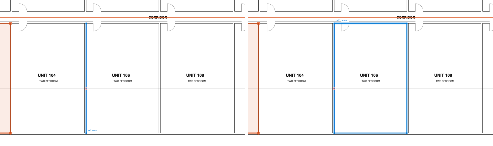
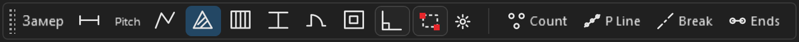
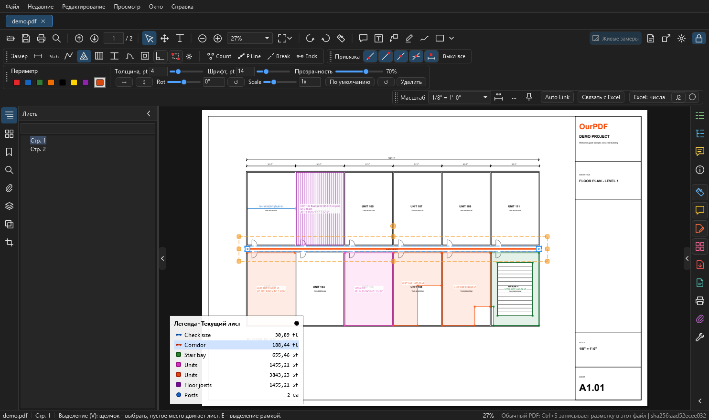

How to measure step by step¶
Ready-made scenarios: what to press, where to click and what to check. Details on each tool are on the Measurements page, all keys on the Keyboard shortcuts page.
Three rules
- Scale first, then measurements. Without a scale, OurPDF writes inches on paper.
- The cursor snaps to drawing lines: place points on the line, not next to it.
- Esc cancels what is being drawn, Ctrl+Z undoes what is finished.
1. Prepare the sheet¶
- Open the PDF (Ctrl+O or drag the file into the window) and go to the sheet you need.
- Turn measuring on: the ruler button. The buttons sit in blocks on the top toolbar (Top toolbar).
- In the "Scale" block, pick the scale from the title block or the caption under the view (
1/8" = 1'-0") and press Enter. - Check the scale: R and two clicks on the ends of a known dimension (a dimension string, a long wall). The value must match the dimension on the drawing.
- It doesn't match: the calibrate button next to the scale box, mark a known segment and enter its length (
25'-6"). - Save the scale in the sheet: the pin button next to the box (or Ctrl+S). The file will then open with it already set, here and in Acrobat.
A detail at a different scale
There is one scale for the whole sheet, and changing it recalculates all OurPDF measurements on that sheet. To get a dimension of a detail at its own scale: set the detail scale, take the dimension (R), write it down and set the sheet scale back. Do permanent measurements of such a detail in OurPlanCore.
2. Walls in LF¶
- Press L (line).
- Click the wall corners along one face (or the centerline); each point snaps to a drawing line.
- Perfectly horizontal or vertical: hold Shift or turn on Ortho (F8).
- Finish: C, Enter or double-click.
- Name it: double-click the line (the "Select" tool, V) and type a label, for example
1st Ext 2x6.
Faster along the drawing: before the first point, hover over the wall line and press Tab. The edge (this line) highlights, a second Tab highlights the whole contour, a click takes it all (Tab along a line).
The line's length shows in a box by the cursor on hover; all lines with their values are in the "Comments" list on the right.
3. Floor or room area in SF¶

Three ways, from fast to manual:
| Way | When | How |
|---|---|---|
| Tab along the contour | the room or floor is outlined with a solid line | A, cursor on the wall, Tab Tab, click |
| Box (F9) | a rectangle | A, F9, click one corner, click the opposite one; width x height shows under the value |
| By corners | a complex shape | A, click the corners, click the first point, double-click or Enter |
What to subtract (stair, shaft, atrium): X, a box or polygon over the area. Inside the area you get a hole, across the edge it bites off a piece, across the whole area it splits it in two (Cut).
4. Elevation: sheathing and siding¶
- Set the elevation scale (step 1).
- A and trace the elevation wall along its outline: by corners, or Box (F9) if the wall is rectangular.
- Subtract windows and doors: X, drag a box over each opening. If the area was selected, only it is cut.
- The area value is already net of openings (net SF); check it in the box on hover.
- For finishes by height (for example, siding only up to a band), split the area with a cut across it.
If the elevation hatch sits on its own PDF layer, the areas can be taken with one button: the "Layers" tab, pick the layer, "Trace layer as areas" (Trace a layer).
5. Joists and rafters¶

- The gear in the "Measure" block: type (
2x10), spacing (16"), pitch (empty for joists,6:12for rafters), rounding. - J, trace the area like an area (or F9 and two corners, or Tab along the contour).
- Two points along the joist direction (Enter takes the long side).
- Extra joists (doubled under walls, at openings): select the area, D, click inside; Shift and click removes one, D or Esc exits.
- Right-click the area: "Copy joists note" gives the label and a list of lengths with counts for Excel.
6. Pieces, beams, openings: Count, Beam, Openings¶

Posts, holdowns, anchors (Count).
- P or Count in the "Measure" block.
- Click every symbol on the sheet: one point per physical item. No scale needed.
- Esc finishes. Points at both ends of lines already drawn come from Ends: select the lines and press Ends.

Beam.
- B, two clicks at the beam ends, support to support.
- In the window the beginning of the name is selected: type the mark (
FB1). The order length is already in the name: 10'-3" gives12. - The tool switches to Count of this takeoff by itself: click the other identical beams, Esc finishes.
The beam dimension on the sheet is for reference: the Count goes to the legend, totals and Excel.
Openings.
- O, two opposite corners of the opening on an elevation.
- The width goes as a dimension on top, the height on the left, the Count takeoff is named by the size (
3.0x6.8), the mark sits in the middle of the opening. - Click the other identical openings, Esc finishes.
Details and settings: Beam and Openings, Count, P Line, Break, Ends.
7. Check a dimension on the drawing¶
R and two clicks: you get a dimension line with ticks at the ends, and the dimension is always labeled on the sheet. Handy for checking the scale, a span or an opening width. Delete it afterwards if not needed: select it and Del.
Both room dimensions at once: R, F9, two opposite corners. You get two separate distances from the first corner, horizontal and vertical (Box).
8. Fix a measurement¶

| What you need | How |
|---|---|
| move a point | V, select the measurement, drag the point (it snaps to the drawing) |
| move an edge | drag an edge of the selected measurement; Shift keeps it straight |
| delete a point | click the point, Del |
| delete an edge | click the edge (both its points get selected), Del |
| move the whole measurement | drag from inside the area or with Alt |
| select many | E and a frame: left to right takes what is wholly inside, right to left everything touched |
| undo | Ctrl+Z |
9. Mark a question on the sheet¶
Callout (the button next to "Text" on the toolbar): click where the arrow points, a second click where the text goes, then the text. Handy for questions to the client and notes to yourself; it goes into the PDF together with the measurements.
10. Save and export¶
- Measurements are saved automatically in the app profile while the PDF is open.
- Ctrl+S writes them into the PDF itself (a copy of the previous file goes into backups); they are visible in Acrobat and Bluebeam.
- Totals by type: the "Legend" tab on the right strip. A list of all measurements: the "Comments" tab.
- Into an open Excel workbook: select a cell, go back to OurPDF, the Excel button in the "Scale" block, Ctrl+E or Ctrl+T (Excel). To make the cell update by itself: Excel link.
- As a separate
.xlsxfile: the "Measurements to Excel" button in the "Comments" list.
11. Compare two sheets¶
- Open the new sheet, the "Overlay" icon on the left strip.
Add..., pick the old sheet of this PDF or a page of another file.Auto Fit. It doesn't match:Edit by Points, or drag the orange frame.- Colored lines with no black under them are the differences.
Details: Sheet overlay. The overlay is not written on Ctrl+S and is not printed.
12. Gather details on one sheet¶
- The "Crop" icon on the left strip, "Target sheet": a new blank sheet,
Start Cropping. - On the sheets you need, drag frames around the details: they land on the new sheet at 100 %.
- Esc, open the new sheet, arrange the crops with the mouse.
- Measure over the crop as usual, Ctrl+S.
Details: Crop to sheet.
Common mistakes¶
| Mistake | How to avoid it |
|---|---|
| dimensions in inches on paper | the sheet scale is not set: step 1 |
| the value does not match the dimension on the drawing | wrong scale or the sheet is not to scale: calibrate on a known dimension |
| a detail measured at the sheet scale | one scale per sheet: measure a detail at its own scale in OurPlanCore, or take the dimension and set the sheet scale back |
| a point landed on hatching or text | zoom in; turn off the extra snap in the "Snap" block or hide the hatch layer (the "Layers" tab) |
| an area counted twice | look at the "Comments" list: identical values next to each other |
| Excel shows less than the sheet | measurements hidden in the legend are not included in an area export; the status bar says how many |
| measurements are not on paper | printing draws the file as it is saved: Ctrl+S first |
| openings not subtracted from the elevation | a cut X with a box over each opening |
See also¶
- Measurements: all tools in detail
- Keyboard shortcuts
- Comments and saving
- Sheet overlay, Crop to sheet